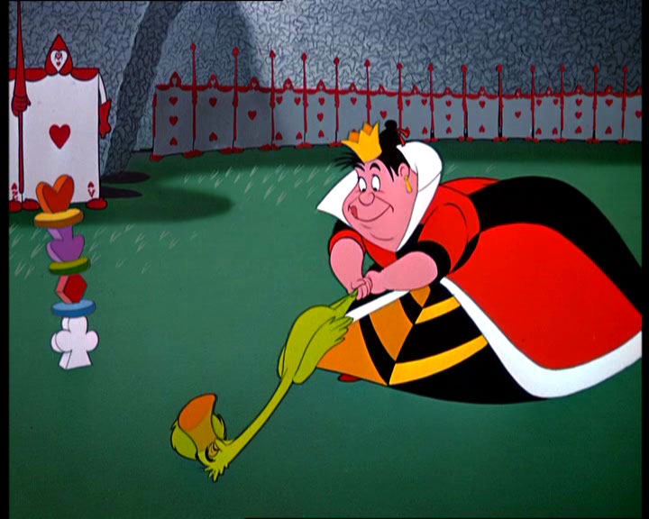

You find yourself in the midst of a peculiar game of croquet at the Queen's royal court. The Queen of Hearts presides over the match, her regal demeanor coupled with a notorious temper. The croquet ground is like no other, with flamingos as mallets and hedgehogs as balls. The participants, including the Cheshire Cat and the White Rabbit, play with an air of excitement and caution.
The Queen of Hearts, known for her love of ordering executions, is unpredictable and demands perfection from all players. As you navigate the peculiarities of the game, you witness the Queen's volatile nature and the consequences of displeasing her. It's an adventure fraught with tension, as you must strike the hedgehogs just right and avoid the flamingos' wayward pecks.
Amidst the chaos of the croquet match, you encounter various Wonderland characters, each with their own unique quirks and personalities. The Cheshire Cat's mischievous grin, the White Rabbit's frantic timekeeping, and the Queen's overbearing presence all add to the enchanting atmosphere of the game.